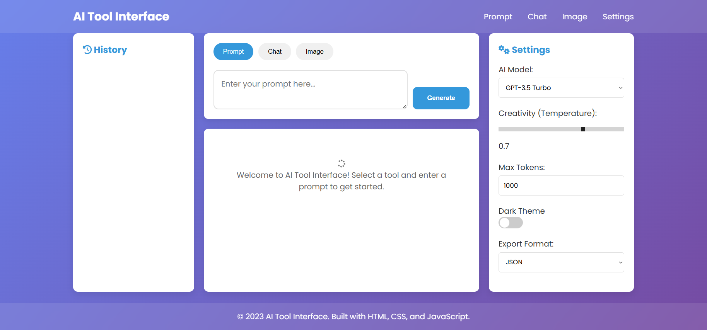

A modern AI-powered interface demonstrating future-ready design for prompt-based, chat, and image generation tools.
Designed a comprehensive UI for AI tools including resume builders, image generators, and chat assistants. The interface includes prompt input screens, results displays, history management, and settings. This project showcases understanding of modern AI-driven products with intuitive, efficient user experiences that handle complex interactions seamlessly.
Intuitive input system with auto-suggestions, templates, and validation for various AI tool types.
Dynamic results presentation with loading states, error handling, and export options.
Organized history with search, filtering, and quick reuse of previous prompts and results.
Comprehensive settings for AI parameters, themes, and user preferences.
Optimized for desktop, tablet, and mobile with adaptive layouts for different screen sizes.
This project demonstrates advanced UI/UX skills for cutting-edge AI products. It showcases the ability to design interfaces that handle complex user interactions, provide excellent user experiences, and stay ahead of industry trends. The design received positive feedback for its intuitive nature and modern aesthetic, positioning the portfolio as future-ready.
User Task Completion
Usability Score
Industry Relevance